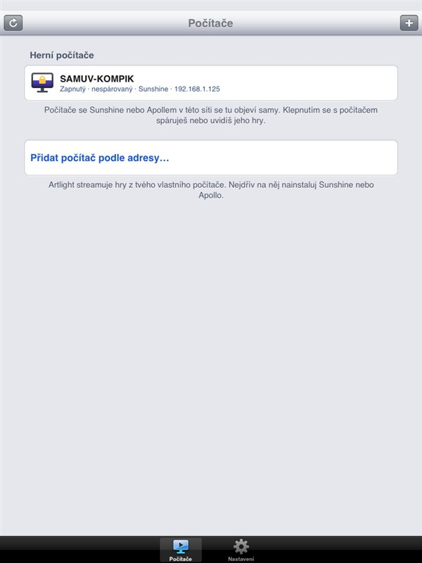
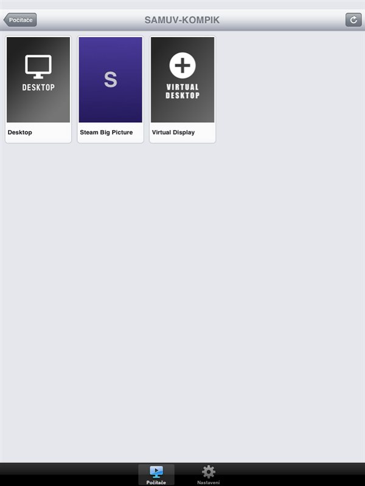

Artlight
Game streaming from your own PC: Sunshine and Apollo hosts
Game streaming from your own PC: Sunshine and Apollo hosts
Play the games of your own PC on a 2012 iPad or iPhone. Artlight speaks the GameStream protocol of Moonlight, so it streams from PCs running Sunshine or Apollo, including the Apollo extras that the Android client Artemis knows. It finds the PCs on your network, pairs with a PIN, shows the PC's apps with their box art and plays them through the hardware H.264 decoder with Opus sound, an on-screen gamepad, touch as a mouse and the keyboard. No server in between: the device talks straight to your PC.


Unofficial apps by samcejko, not affiliated with or endorsed by Twitch, Google, Apple, TikTok, Instagram, Meta, Spotify, Kick, NVIDIA, Mojang, Microsoft, OpenRouter, Vine, X, diVine or the Moonlight, Sunshine and Apollo projects.